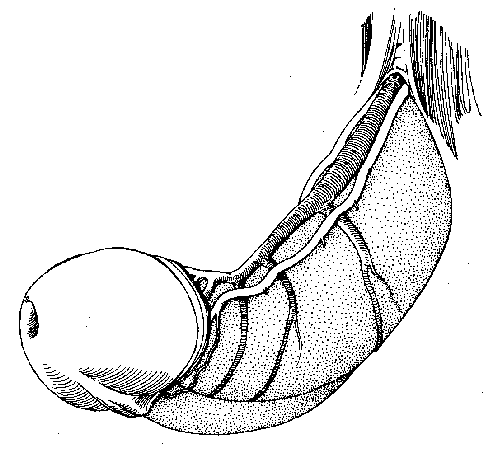
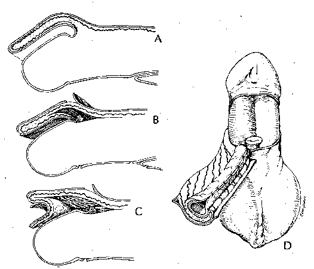

THE BLOOD SUPPLY TO PREPUTIAL ISLAND FLAPS
FRANK HINMAN, JR.*From the Department of Urology, University of California
School of Medicine, San Francisco, California.
CIRP Note: The treatment of hypospadias is beyond the scope of the CIRP. This article is presented because of its excellent discussion of preputial vascularization.
ABSTRACT
The prepuce is formed by a combination of folding and unfolding and epithelial proliferation, and separates from the glans after it has developed a blood supply. The arterial input, through 4 branches from the external pudendal arteries, is terminal and after birth supplies the outer and inner preputial surfaces in succession. Similarly, the venous return arises from small veins running transversely in the prepuce that connect to larger subcutaneous veins along the dorsal surface of the shaft. Because the two preputial surfaces have one blood supply they must be treated as 1 unit. Unfolding the prepuce leaves the former inner segment with only a terminal blood supply. The pedicle containing the superficial blood supply must remain attached to the skin flap or it will be devascularized. However, since this circulation goes exclusively to the flap, the more proximal portion of the prepuce that was raised to form the pedicle becomes ischemic when used as ventral cover. A double faced flap avoids this complication.
Key words: penis, hypospadias, urethra, surgical flaps, island flaps.
On the Formation of Flaps
The preputial skin, with its accompanying superficial fascia and vessels, is ideal material for the construction of flaps for hypospadias repair. It is relatively thin and pliable, and has a good blood supply that can be mobilized as a pedicle. This particular skin tolerates prolonged contact with urine better than any tissue other than bladder mucosa.
Distally, the penile skin forming the prepuce appears as a simple double layer separate from the glans. However, it is not appreciated that embrylogically the prepuce does not form in situ but arises from a combination of folding and epithelial ingrowth from the coronal margin near the glans. Only in later fetal life does separation from the glans occur, leaving a thin epithelialized layer on the inside of the prepuce and a thinner more sensitive layer covering the glans.
Since the prepuce is formed by progressive extensions from the coronal sulcus, it initially has a single terminal arterial system in the mesenchyme that ends at the preputial ring supplying the inner and outer preputial surfaces. Only later after retraction does some of the blood supply run first along the outer surface to end at the coronal sulcus. The vessels in the superficial fascia are axially oriented and flaps must be constructed on longitudinal pedicles. When the prepuce is used for a flap on the portion attached to the vascular pedicle can be considered adequately vascularized.
An understanding of the development of the prepuce and its blood supply is helpful for the greatest use of this organ.
ORIGIN OF THE PREPUCE
At approximately 8 weeks of gestation symmetrical low ridges arise just proximal to the sulcus near the meatus and progress dorsally until they form a fold entirely around the glans, except in the midline on the ventrum where they are blocked by the incompletely developed urethra (fig 1,A). This preputial fold rolls over the base of the glans to leave a groove between it, the coronal sulcus and the nascent prepuce.[1] Simultaneously, the glanular lamella, an ingrowth of epithelium many cells thick, actively proliferates in the groove to form a shelf between the preputial fold and the glans (fig. 1, B).[2,3] Since this epithelial tissue generates most actively at the apex (proximal end) of the groove its proliferation carries the ridge of the preputial fold distally. The tissue of the more proximal portion of the epithelial glanular lamella is not as well differentiated as that distally, showing that the prepuce is not formed by fusion but by being pushed ahead by active proliferation. The mesenchyme between the layers of prepuce proliferates, thus extending its tip even after it reaches the summit of the glans (fig. 1,C). By 4 months the single epithelial layer between the prepuce and the glans begins to split into 2 layers beginning distally and continuing proximally until birth (fig. 1, D).[4]
Thus, 3 processes form the prepuce: 1)initially, the skin of the shaft is folded over the base of the glans at the coronal sulcus to create a groove, 2) a ring of epithelial cells form a shelf and proliferates in the groove to carry the prepuce progressively distally until it reaches the tip of the glans, helped by mesenchymal growth within the prepuce, and 3) beginning distally, the epithelial layer between the prepuce and glans separates into 2 layers.

Fig. 1 A, formation of preputial fold. B, ingrowth of
glanular lamella. C, advance of prepuce by mesenchymal
prolferation. D, separation of epithelial layer between
prepuce and glans.
PREPUTIAL ARTERY SUPPLY AND VENOUS DRAINAGE
Four arteries provide the blood supply to the prepuce (fig. 2, A). The inferior external pudenal artery gives off 4 branches as the superficial penile arteries (2 enter the superficial fascia of the penis dorsolaterally and 2 enter it ventrolaterally). Beyond the preputial ring on the inner surface the terminal branches become minute.
Venous drainage is less well organized (fig. 2, B). Multiple small veins in the prepuce without particular orientation join the superficial dorsal veins and drain into the saphenous vein. [5] The blood supply to the frenulum arises from the dorsal artery of the penis (fig. 3). Branches of the dorsal artery curve around each side of the distal shaft to enter the glans and the frenulum ventrally.

Fig. 2 A, arterial blood supply to prepuce. B, venous drainage of prepuce

Fig. 3 Blood supply to frenulum.
THE SURGICAL IMPLICATIONS OF THIS FORM OF BLOOD SUPPLY
The prepuce is not formed by skin of the shaft that slides distally to cover the glans. Since it develops over a mesodermal core that is then split off, the arteries supplying it would be expected to run distally in the connective tissue core and terminate at the preputial ring, rather than at the corona. This is not the case, since the prepuce must form a 1-layer sheet of skin during erection. Thus, the terminal vessels lose their axial arrangement and become reoriented when erection and preputial retraction begin. When the prepuce is not retracted they loop back upon themselves to terminate at the corona and not at the preputial ring.
APPLICATION TO REPAIR OF HYPOSPADIAS
Other than for minor degrees of deformity, most hypospadias procedures make use of the prepuce. A virtually bloodless circumcising incision can be made to release the prepuce before preparing a proximal flap, since the arteries enter the prepuce proximally along the shaft and rarely from the area of the coronal sulcus. For a 1-face island flap the blood supply to the prepuce in the area of the proposed flap follows the contour of the skin by doubling back at the preputial ring. (fig. 4, A). The pedicle containing the blood supply to the inner prepuce is dissected with care to avoid jeopardizing the new tube (fig. 4, B and C). Once the vascularized pedicle is developed, the flap may be rolled into a tube for construction of a neourethra (fig. 4, D). Then, however, the principal arterial support is diverted away from the outer flap, reducing the vascularity needed to avoid ischemia when this flap is applied to cover the ventral defect.
For a 2-faced island flap the entire superficial fascial arterial system is maintained to supply both faces to avoid creating a devascularized covering flap (fig. 5, A).[6] The preputial skin is divided transversely in 3 places (fig 5, B). Both flaps are supplied by the entire pedicle (fig. 5, C). Since the more distal flap is rolled into a tube, ventral cover is obtained from the proximal well vascularized flap and the pedicle then supplies both flaps (fig. 5, D).

Fig. 4 Single-faced island flap. A blood supply follows contour of prepuce.,
B and C, dissection of island flap. D, formation of tube.

Fig. 5. Double-faced island flap. A, blood supply. B, division of skin at 3 sites.
C, pedicle supplying both portions of flap. D, inner tube covered by vasularized skin.
CONCLUSIONS: PRECEPTS FOR CONSTRUCTION OF PEDICLE FLAPS
Keep intact at least 1 of the 4 branches of the external pudendal artery supplying the penile skin. The dorsal 2 branches are most suitable for formation of a pedicle for a flap. Make only longitudinal incisions in the superficial fascia because of the axial arrangement of the superficial vessels. Do not divide the superficial fascia with its contained blood supply. It cannot support two flaps on the same superficial artery. Consider the prepuce as 1 unit. It has a single blood supply to the inner and outer preputial surfaces. After the prepuce is unfolded, if the more distal, inner segment is not left generously attached to the superficial blood supply devascularization may follow when a flap is formed from it. Similarly, since this blood supply is directed to the flap the more proximal portion of the prepuce is deprived. Raise a second flap if necessary, since there are usually 4 arteries to the prepuce. Remember that the closer to the corona the preputial flap is mobilized the more tenuous will be its vascularization. A flap from the shaft is best. Next best is one from the outer surface of the prepuce. A flap formed only from the inner preputial surface has the poorest blood supply, which is important when a flap is placed at a scarred site, as in secondary operations for adults. Base all flaps on the superficial fascial system of blood vessels that enter proximally. Use magnification on the minute terminal vessels to preserve them during formation of a flap.
REFERENCES
- Hunter, R. H.: Notes on the development of the prepuce. J. Anat., 70: 68, 1936.
- Glenister, T. W.: The origin and fate of the urethal plate in man. J. Anat., 88: 413, 1954.
- Glenister, W. W.: A consideration of the processes involved in the development of the prepuce in man. Brit. J. Urol., 28: 243, 1956.
- Deibert, G. A.: The separation of the prepuce in the human penis. Anat. Rec., 57: 387, 1933.
- Breza, J.: Personal communication.
- Arap, S., Mitre, A. I., Giron, A. M. and Nahas, W. C.: Correcas cirugica de hipospadia medio-peniama, penian proximal e penescrotal utilizando diplo retalho ilhado de prepucio (double island flap). Rev. Hosp. Clin. Fac. Med. Sao Paulo, 40: 223 1985.
Editorial Comment
The article has merit but seems to extend anatomical considerations to the clinical area where the described limitations have not prevailed. The author has chosen a deductive logic based on enbryological sequence leading in the abstract and text to favoring a pedicled double spaced flap in the repair of hypospadias. Indeed, the proposed mobilized 2-faced flap has been found wanting. That approach has been pursued by Asopa and Asopa,[1] Duckett and Hodgson[3,4] separately, and has since been abandoned by all of them because of a bib effect on the ventrum. Clinical experience has not encountered the absolute limitations set by the premise. The vascular supply of the prepuce is axial. The quality of the vessels is variable and to some extent visible through transillumination. The vessels can be used individually, selectively or collectively. They can determine the choice of a ventrally rotated attached innerface island flap,[1,3,4] a mobilized innerface island flap,[2] a verge island flap[5] or an external face island flap.[6] These island flaps can be transverse of tangential,[3,4] or vertical.[7] They can also be dorsal or ventral. The innerface can remain attached to the coronal margin and retain vitality through back perfusion. Dorsal release then allows the use of advancement flaps to the ventral side (Firlit). The observation that the dorsal artery divides to curve around the distal shaft to enter the glans ventrally is also supplemented by feeders entering mainly at the 10 and 2 o'clock positions.
The anatomical studies of Juskiewenski et al,[8] and Quartey[7] along with the clinical observations of (alphabetically) Asopa and Asopa,[1] Broadbent, Carmignani et al,[5] Duckett,[2] Hinderer,[9], Hodgson,[3,4] Orandi, Standoli[6] and Van Der Meulen all show the versatility of vascularized flaps. I believe the work is of merit to emphasize the vasculature and some of the characteristics of the prepuce but that deductive reasoning has imposed limits that are unsupported in clinical experience. Clearly, ischemia is a consideration that limits the expression of flap use but it can be judged (if necessary with flourescein) intraoperatively or used in a variety of different approaches.
Norman B. Hodgson
Department of Urology
Medical College
of Wisconsin
Milwaukee, Wisconsin
- Asopa, R. and Asopa, H. S.: One stage repair of hypospadias using double island preputial skin tube. Indian J. Urol., 1: 41, 1984.
- Duckett, J. W.: The island flap technique for hypospadias repair. Urol. Clin. N. America., 8: 503, 1981.
- Hodgson, N. B.: A one-stage hypospadias repair. J. Urol., 104, 1970.
- Hodgson, N. B.: Hypospadias and urethral duplications. In: Campbell's Urology, 4th ed. Edited by J. H. Harrison, R. F. Gittes, A. D. Perlmutter, T. A. Stamey and P. C. Walsh. Philadelphia: W. B. Saunders Co., vol. 2 sect XII, Chapt. 45, p. 1566. 1979.
- Carmignani, G., Maffezzini, M., De Stefani, S., Corbu, C. and Poddighe, S.: A rectangular dorsal preputial vascularized skin flap for one stage hypospadias repair. J. Androl., 5: 141, 1984.
- Standoli, L.: One-stage repair of hypospadias: preputial island flap technique. Ann. Plast. Surg., 9: 81, 1982. [PubMed]
- Quartey, J. K. M.: One stage penile-preputial cutaneous island flap urethroplasty for urethral stricture: a preliminary report. J. Urol., 129: 284, 1983. [PubMed]
- Justenwenski, S., Vaysse, P. and Moscovici, J.: A study of the arterial blood supply to the penis. Anat. Clin., 4: 101, 1982. [Abstract]
- Hinderer, U.: General considerations. In Long-Term Results in Plastic and Reconstructive Surgery. Edited by R. M. Goldwyn. Boston: Little, Brown & Co., chapt. 16, pp. 378-410, 1978.
REPLY BY AUTHOR
The authoritative and practical comments of Doctor Hodgson are important for those repairing hypospadias. The illustrations and descriptions in the article provide an understanding of the peculiarities of his blood supply, and allow application and continued evolution of surgical techniques. Such anatomical knowledge is necessary but the experience of those who apply it to clinical problems must be heeded.